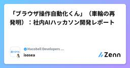
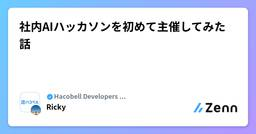

Hacobell Developers Blogのフィード
https://zenn.dev/p/hacobell_dev
「物流の次を発明する」をミッションに物流のシェアリングプラットフォームを運営する、ハコベル株式会社 開発チームのテックブログです！ 【エンジニア積極採用中】https://t.hacobell.com//blog/engineer-entrancebook
フィード
エンジニアの育休日記:ミルク選びとユーザーリサーチ・テストケース作成手法 1
1
Hacobell Developers Blogのフィード
この記事は「Hacobell Developers Advent Calendar」5日目の記事です。最近育休をとってました @na9amura です。毎日いろいろな初めての経験、試行錯誤をしていて大変ですが刺激のある毎日をおくっています。育児中に試行錯誤したことの1つに、ミルクを必要量飲み切ってくれないことがたまにあるという悩みを解消したい、ということがありました。その中でプロダクト開発、ソフトウェアエンジニアリングでも使う探索手法を応用できたのが面白かったので紹介してみます。身近な例で手法を学び、皆さんの仕事に応用する学びになれば嬉しいです!この記事は探索手法の紹介記事で...
2日前
SlackのHuddleを使うなら、チャンネルを分けよう
Hacobell Developers Blogのフィード
こんにちは、ハコベル開発チームの坂東です。この記事は「Hacobell Developers Advent Calendar」4日目の記事です。私たちのチームでは、日常的にSlackのHuddle機能を使ってミーティングを行っています。手軽に音声通話を始められて便利な一方で、ある課題に悩まされていました。それは「Huddleの通知でメインチャンネルが埋まってしまう」という問題です。この記事では、会話専用チャンネルを作るというシンプルな工夫で、この課題をどう解決したかを紹介します。 メインチャンネルがHuddle通知で埋まる問題私たちのチームは3つのサブチームで構成されており、...
3日前

「ブラウザ操作自動化くん」（車輪の再発明）：社内AIハッカソン開発レポート
Hacobell Developers Blogのフィード
この記事は「Hacobell Developers Advent Calendar」3日目の記事です。前日の堀崎さんの記事「定型作業をAIで効率化する「ブックマークレット自動作成くん」：社内AIハッカソン開発レポート」の続編となっています。こちらもぜひ合わせてご覧ください。 はじめに本題に入る前に、少しだけ背景を紹介させてください。 先日ハコベルでは、社内「1Day AIハッカソン」を開催しました。https://note.com/hacobell/n/n5fa4579fbffc朝イチでチームビルディングをして、夕方には成果発表というタイトなスケジュールの中で、私のチームは「...
4日前
定型作業をAIで効率化する「ブックマークレット自動作成くん」：社内AIハッカソン開発レポート
Hacobell Developers Blogのフィード
この記事は「Hacobell Developers Advent Calendar」ー 2日目の記事です。 はじめに皆さんの日々の業務には、このような面倒な定型作業は潜んでいないでしょうか？100個のチェックボックスを入力するのが大変一覧画面から特定フラグの行だけを抽出・除外したい全ての項目からタイトル名だけコピーしたいこれらはほんの一例ですが、ブラウザ上で行う単純ながらも時間のかかる作業は、多くの現場に存在します。私たちハコベルは、AI活用を積極的に推進しており、その一環として先日、社内「1Day AIハッカソン」を開催しました。https://note.com/...
5日前

社内AIハッカソンを初めて主催してみた話 1
Hacobell Developers Blogのフィード
こんにちは、ハコベル開発チームの坂東です。この記事は「Hacobell Developers Advent Calendar」1日目の記事です。2025 年 10 月、ハコベル社内で初となる「1Day AI ハッカソン」を開催しました。主催者として企画から運営まで担当したのですが、初めてのイベント運営は想像以上に大変で、準備段階からかなりバタバタしてました。!イベント全体の様子や成果物の詳細については、以下の note 記事にまとめています。この記事では、運営者の視点から「どう準備したか」「何が大変だったか」を備忘録としてまとめます。https://note.com/haco...
6日前

「SQS＊Step Functions＊Fargate」でジョブの待ち時間を解消したら、コストも80%削減できた話
Hacobell Developers Blogのフィード
こんにちは、ハコベルでエンジニアリングマネージャー兼テックリードをやっている吉岡です。この記事では、ハコベル配車計画 チームで実施した、インフラアーキテクチャ改善事例についてご紹介します。 これまでのアーキテクチャと課題ハコベル配車計画が提供する機能の一つに、配送ルートの最適化計算があります。ユーザーは、この計算が想定している時間通りに終わることを前提に業務を組んでいるため、遅延すると配車業務全体が遅れてしまいます。これまでも、ユーザー数の増加を見越してECSタスク数を調整するなど、運用でカバーすることで影響を防いできましたが、その対応頻度も高まっていました。旧アーキテクチャの...
1ヶ月前
【Claude Code】Serenaの導入でAI活用を加速！
Hacobell Developers Blogのフィード
3行まとめClaude Codeの出力精度を安定させるための設定ファイル整備に苦労していたSerena導入で、コードベース全体の一貫性を保持しつつ、暗黙知の言語化コストを大幅削減LSPとIndexingによりToken使用量が削減され、APIコストを低減 はじめにClaude Codeを導入してみたものの、期待した効果が得られずに悩んでいる方も多いのではないでしょうか。私もその一人でした。具体的には、コードベース全体との一貫性や、チーム固有の設計思想を踏まえた生成がうまくいかず、そのたびにCLAUDE.mdやプロンプトで補足情報を足すのですが、暗黙知を毎回言語化して投...
2ヶ月前
Pull RequestのUpdate BranchボタンをGitHub Actionsで自動化したら便利だった話
Hacobell Developers Blogのフィード
こんにちは、ハコベル開発チームの坂東です。チーム開発で Pull Request を作成して作業していると、base ブランチが古いまま開発を続けてしまい、後で作業が巻き戻ってしまったという経験はありませんか？例えば、他のメンバーが先にマージした変更と競合したり、既に修正済みのバグを再度修正してしまったり。特に、feature ブランチから派生したブランチなど、ブランチがネストしている場合にこの問題が起きやすいです。基本的に、作業中は常に最新の base ブランチの変更を取り込むことが求められますが、手動で git pull origin main や git merge main...
3ヶ月前
それって本当に「好みの問題」？
Hacobell Developers Blogのフィード
3行まとめ「好みの問題」は思考停止のサイン「好みの問題」が逃げ道になる理由は心理的負荷と言語化スキル不足「好みの問題」を議論の終着点ではなく議論の出発点にしよう はじめにあなた：「ここは〇〇とした方がいいと思う」相手：「いや、私は△△の方がいいと思う」あなた：「コードの可読性を踏まえると、〇〇の方がいいと思う」相手：「△△でも読みやすいから好みの問題だと思う」チームで何かを決めるときやレビューの場面で、こうしたやり取りを見聞きしたことがある人は多いのではないでしょうか。特に設計の方向性やコードスタイル、UIデザインのように絶対的な正解が存在しないテーマでは...
5ヶ月前
Pull Request にマージ条件を書いて、レビュー渋滞を解消した話
Hacobell Developers Blogのフィード
こんにちは、ハコベル開発チームの坂東です。最近、生成 AI の普及でコードの作成スピードが上がり、Pull Request の作成頻度も増えていませんか？私たちのチームでも、以前よりも Pull Request が多く作られるようになった一方で、レビューが追い付かずに渋滞が発生するケースが目立ってきました。私たちの運用では Pull Request の作成者が自分でマージすることになっていますが、メンバーが増えたことで 「誰のレビューを何件集めれば良いのか」 というルールが曖昧になり、お見合い状態の Pull Request が溜まる状況でした。この状況を改善するため、私たちは数ヶ...
6ヶ月前
E2Eテストの実装における落とし穴：シナリオベースから機能ベースへの移行で得た教訓
Hacobell Developers Blogのフィード
はじめにソフトウェア開発の現場において、エンドツーエンド（E2E）テストは、ユーザーが実際に体験するであろう一連の操作を通じて、システム全体の品質を保証するために欠かせないプロセスです。開発スピードの向上と品質維持を両立させるため、多くのチームがE2Eテストの自動化に取り組んでいます。しかし、単に手動で行っていたテストシナリオをそのまま自動化しようとすると、予期せぬ問題に直面することがあります。本記事では、E2Eテスト自動化における「シナリオベーステスト」の課題と、その解決策としての「機能ベーステスト」への移行について解説します。※ この記事は【めぐろLT #25 「私、これ自...
8ヶ月前
BDDの考え方を取り入れ、複雑な要件の開発に立ち向かおう
Hacobell Developers Blogのフィード
こんにちは、ハコベル開発チームの坂東です。プロダクト開発に携わっていると、エンジニアごとに実装イメージが異なるコードレビューの段階で要件についての議論が発生するQA 終盤で実装漏れに気づき、慌てて修正するスプリントレビューで仕様の取り違いを指摘されるなどの問題に直面することはありませんか？こうした問題は、複雑な要件の開発が多いチームほど深刻になりがちです。そこで私たちのチームでは、「実装前にシステムの振る舞いを洗い出し、チーム全員で合意形成を行う」ことを重視しています。今回は、その具体的なアプローチと合わせて、取り組む際のポイントや注意点についてもご紹介します。以下...
9ヶ月前
新卒エンジニアがスクラムマスターとして取り組んだ開発プロセスの改善
Hacobell Developers Blogのフィード
始めまして。ハコベルで、テックリードを務めている横山怜です。本記事は先日のハコベル初のMeetupイベントにて行ったLT「スクラムマスターとして取り組んだ開発プロセスの改善」を、より詳しくテックブログの記事として再構成したものです。プロジェクトの現場で実際にどのような課題と向き合い、どのように改善を実施してきたのか、その軌跡を紹介します。https://hacobell.connpass.com/event/342174/ 記事の内容新卒で入社した自分が当時の開発チームのスクラム体制に疑問を持ち、スクラムマスターになってから開発プロセスを改善するまでの流れを、具体的なエピソード...
10ヶ月前
【VSCode】試行錯誤の末たどりついた設定管理術
Hacobell Developers Blogのフィード
みなさんは VSCode の設定をどのように管理していますか？この記事では、プロファイル機能を使って VSCode の設定をきれいに保つ方法を紹介します。!※ この記事はシンプルな説明のために、 VSCode の Remote Development や DevContainer を使わないローカル開発を前提としています。 結論私は VSCode の設定を以下の3つに分類して管理しています。① どのワークスペースでも有効化したい設定→ 既定（Default）のプロファイルで管理する② 特定のワークスペースにおいて、チームで合意した設定→ 各ワークスペースの.vsco...
10ヶ月前
【TypeScript×関数型】まとめてエラーを捕まえる！neverthrowで実現するスマートなCSV検証
Hacobell Developers Blogのフィード
はじめにCSVデータの検証においては、数多くのエラーが同時発生する可能性があります。たとえば「ある行のIDが数値ではない」「日付が無効」「必須項目が空欄」など、複数セルで同時に問題が起こりえるのがCSVの難しいところです。JavaScriptの例外処理では、標準的な例外処理手法であるtry-catchをネストしてエラーを拾う方法がよく使われてきましたが、このアプローチには多くの問題が潜んでいます。そこで、今回は TypeScript の関数型スタイルでのエラーハンドリングを可能にするライブラリ neverthrow を活用し、複数のバリデーション結果をまとめて扱う方法を紹介しま...
1年前
「ねこGIF事件」年内しくじり供養
Hacobell Developers Blogのフィード
「めぐろLT Advent Calendar 2024」ー 20日目の記事です。今回は、私が入社直後にやらかしてしまったしくじりと、そこから学んだ改善策についてお話させてください。 要件定義が進まず、本番環境のデータを確認し始める入社直後、私は要件定義がなかなかスムーズに進まず、苦戦していました。原因を振り返ると、QA環境のデータだけでは実際のユーザーの行動の解像度が低いままで、実際にどう業務で使われているかをイメージするのが難しい状況でした。そこで、解決策として本番環境のデータを確認するという選択を取りました。本番環境には、実際に業務で使用されている生データが存在します。そ...
1年前
Rails で既存テーブルに STI を適用する時に気をつけること
Hacobell Developers Blogのフィード
Rails の STI (Single Table Inheritance) は、1つのテーブルで複数のモデルを管理できる便利な機能です。しかし、既存のテーブルを STI に移行する際には注意が必要です。今回は、実際に遭遇した問題とその解決策について共有します。 問題が発生した状況既存のテーブルに STI を導入するため、以下の変更を1回のリリースで行おうとしました。type カラムの追加サブクラスの追加デプロイの流れは以下のようになっていましたデータベースのマイグレーション実行（db:migrate）Rails アプリケーションの再起動この時、マイグレーション...
1年前
【VSCode】 マルチカーソル、使ってますか？
Hacobell Developers Blogのフィード
この記事は「めぐろLT Advent Calendar 2024」ー 16日目の記事です。マルチカーソル機能は、複数のカーソルを使って同時に編集を行うことができる機能です。VSCodeには、このマルチカーソル機能が標準で搭載されており、効率的なコーディングをサポートしてくれます。マルチカーソルを使用している様子本記事では、マルチカーソル機能の使い方と、筆者が実際にどのような場面で使用しているかを紹介します。 マルチカーソル機能の使い方VSCodeでは以下の方法でマルチカーソルを作成することができます。マルチカーソルの作成方法Mac版のショートカットWindow...
1年前
GitHubでファイル差分が表示されない！？レビューを快適にするための差分の非表示ロジックを解説
Hacobell Developers Blogのフィード
はじめにある日、プロジェクトのschema.resolver.goファイルが突如としてGitHub上でgenerated fileと判定され、プルリクエストの差分に表示されなくなる問題に直面しました。「Some generated files are not rendered by default」となり差分が表示されない様子schema.resolver.goファイルは、GraphQLサーバーの実装ファイルでgqlgenによってメソッドのシグネチャのみが自動生成されますが、その実装部分は我々が記述しなければなりません。そのため、コードレビューは不可欠ですが、GitHubで差...
1年前
【技術選定】 0→1 の SaaS に採用して感じた GraphQL への向き合い方
Hacobell Developers Blogのフィード
この記事では、ハコベル配車計画の0→1フェーズのSaaSプロダクトにおいてGraphQLを採用した経験から感じたGraphQLへの向き合い方について紹介します。スライドでも公開していますのでぜひご覧ください。また、この内容についての発表は下記で配信されていますので、こちらもぜひご覧ください。https://findy.connpass.com/event/328076/ プロダクトの背景2022年に、物流DXを実現する新たなSaaSを作るプロジェクトが始まりました。今まで経験と勘を頼りに行われていて属人化していた配車計画業務にフォーカスしています。この業務を仕組み化し、A...
1年前